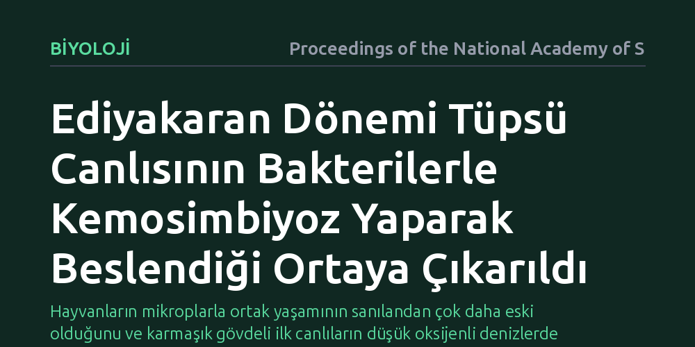

BIYOLOJI · Proceedings of the National Academy of Sciences · 2026-09-08
Araştırmacılar, Ediyakaran dönemine ait erken tüpsü bir hayvan fosilinde beslenme biçimini ve olası canlı ortaklıklarını inceledi. Analizler, bu hayvanın bağırsakla beslenmek yerine bünyesindeki kemosentetik bakterilerle ortak yaşayarak kimyasal enerjiden yararlandığını ortaya koydu.
Hayvanların mikroplarla ortak yaşamının sanılandan çok daha eski olduğunu ve karmaşık gövdeli ilk canlıların düşük oksijenli denizlerde kimyasal enerjiyle hayatta kalabildiğini gösterir.

Yaklaşık 550 milyon yıl önce, Ediyakaran döneminin sonlarında Dünya okyanusları günümüzden çok farklı bir kimyaya sahipti. Dip sularında oksijen seviyeleri son derece düşüktü ve hayvanlar alemi henüz yeni yeni karmaşık vücut planları geliştirmeye başlamıştı. Bu dönemin en yaygın ve dikkat çekici canlıları arasında 'klodinomorf' olarak adlandırılan, organik veya mineralleşmiş tüpler içinde yaşayan hayvanlar yer alıyordu. Ancak belirgin bir ağıza veya sindirim kanalına ait net fosil izleri taşımayan bu canlıların enerjilerini nasıl sağladığı paleontologlar için uzun süredir çözülemeyen temel bir soruydu.
Hayvanlar ile mikroorganizmalar arasındaki ortak yaşam (simbiyoz), canlılar tarihinin en güçlü evrimsel itici güçlerinden biridir; buna karşın fosil kayıtlarında mikrop-hayvan birlikteliklerine dair doğrudan kanıt yakalamak son derece güçtür. Günümüzde derin denizlerdeki hidrotermal bacaların etrafında yaşayan bazı tüp solucanları, herhangi bir sindirim sistemine sahip olmadan, vücutlarında barındırdıkları bakterilerin kükürtlü bileşikleri işlemesi sayesinde beslenir. Araştırmacılar, benzer bir kimyasal ortak yaşam stratejisinin Kambriyen öncesi ilk karmaşık hayvanlar tarafından da kullanılmış olup olamayacağını aydınlatmayı amaçladı.
Bu gizemi çözmek amacıyla araştırmacılar, Güney Çin'deki Gaojiashan fosil yatağından elde edilen ve iyi korunmuş Geç Ediyakaran dönemi tüpsü hayvan fosillerini incelemeye aldı. Canlıların ince anatomik yapılarını ve olası mikrobiyal kalıntıları gözlemlemek için yüksek çözünürlüklü taramalı elektron mikroskobu ve mineral haritalama yöntemleri kullanıldı.
Araştırmanın can damarını ise ayrıntılı jeokimyasal ölçümler oluşturdu. Fosil dokularında meydana gelen pirit (demir sülfür) mineralleşmesi incelendi; kükürt ve molibden gibi elementlerin kararlı izotop oranları kütle spektrometresiyle analiz edildi. Bu izotopik ayrımlar, hayvanın yaşadığı su ortamındaki kimyasal koşulları ve kükürt döngüsüne katılan bakterilerin metabolik izlerini doğrudan yansıtan güvenilir veriler sağladı.
Yapılan incelemeler, bu tüpsü hayvanın besin parçacıklarını süzerek ya da yutarak beslenmediğini, enerjisini doğrudan kemosimbiyotik bakterilerden aldığını ortaya koydu. Hayvanın tüp dokularında saptanan mineralize bakteri yapıları ve bunlara eşlik eden sülfür izotop sinyalleri, canlının vücudunda kükürt oksitleyen bakterileri barındırdığını gösterdi.
Elde edilen jeokimyasal kanıtlar, hayvanın deniz tabanında oksijenin tükendiği ancak hidrojen sülfür gibi indirgenmiş bileşiklerin bol bulunduğu bir geçiş zonunda yaşadığına işaret etti. Canlı, tüpünü tortunun içine ve üstündeki suya doğru uzatarak bakterileri için gereken kimyasal maddeleri bir araya getiriyor; bu bakterilerin ürettiği organik moleküllerle beslenerek sindirim organı olmadan yaşamını sürdürüyordu.
Bu bulgu, hayvanlar ile mikroplar arasındaki kemosimbiyotik ortak yaşamın kökenlerini Kambriyen Patlaması'ndan önceki Ediyakaran dönemine kadar geri götürüyor. Daha önce erken hayvanların yalnızca yüksek oksijenli ortamlarda organik maddeleri emerek ya da süzerek yaşayabildiği düşünülürken, bu çalışma kimyasal enerjinin hayvan evriminde sanılandan çok daha erken devreye girdiğini kanıtlıyor.
Aynı zamanda keşif, erken iskeletli hayvanların Dünya'nın kimyasal döngüleriyle nasıl etkileşime girdiğini açıkça ortaya koyuyor. Düşük oksijenli kadim denizlerde kemosentez yapan bakterilerle ortaklık kuran bu tüpsü canlılar, ekosistemlerin karmaşıklaşmasında ve erken okyanusların biyojeokimyasal evriminde kritik bir rol oynamıştı.